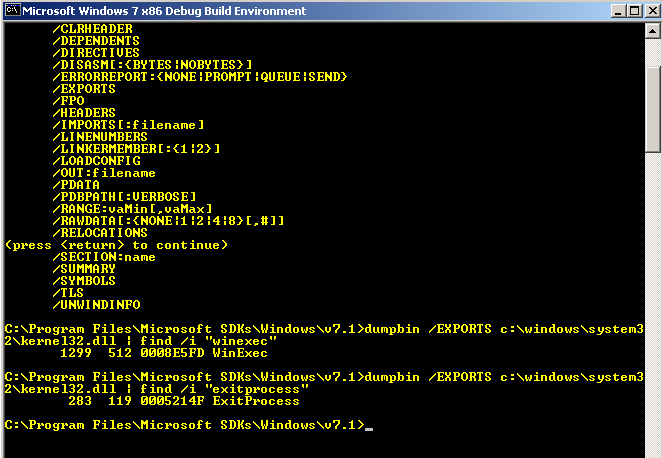

Dumpbin.exe - List DLL export functions

C:\Program Files\Microsoft SDKs\Windows\v7.1>dumpbin /EXPORTS c:\windows\system32\kernel32.dll | find /i "winexec"
1299 512
0008E5FD WinExec
C:\Program Files\Microsoft SDKs\Windows\v7.1>dumpbin /EXPORTS c:\windows\system32\kernel32.dll | find /i "exitprocess"
283 119
0005214F ExitProcess